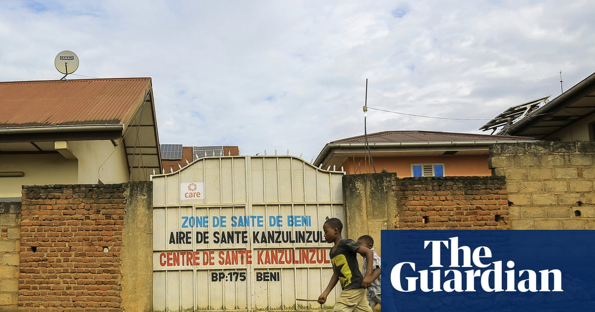

World · 24 Oct 2026
Nigeria confirms Ebola case as outbreak spreads into western Africa

Case in Africa’s most populous country was detected in a woman who had travelled from Uganda Nigeria has confirmed an Ebola case in its capital, Abuja, after a woman who arrived from Uganda tested positive for the virus, the health ministry said. The woman began showing symptoms on 7 October and was
Multiple independent publishers are reporting on the same development: Nigeria confirms Ebola case as outbreak spreads into western Africa.
The available reports place the development in the World category. The accounts were compared for agreement on the central event rather than simply shared names or broad topics.
One of the available reports describes the development this way: Case in Africa’s most populous country was detected in a woman who had travelled from Uganda Nigeria has confirmed an Ebola case in its capital, Abuja, after a woman who arrived from Uganda tested positive for the virus, the health ministry said. The woman began showing symptoms on 7 October and was admitted to a hospital in Abuja four days later, where she was later diagnosed with Ebola. It is unclear when she arrived in Nigeria, Africa’s most populous country. Continue reading...
Readers should consult the linked source reports for additional context, updates and details that may change as the story develops.
Sources
This article was produced by the C. O. Eric AI Newsroom from the cited sources. It is published only after automated evidence and safety checks.